Beide Varianten geprüft — Desktop (1440 px) und Mobile (390 px) — mit echten Seed-Daten, eingeloggt als Jan. 4 Prio-1-Befunde identifiziert, alle 3 echten in einer Sitzung gefixt. Was übrig bleibt: Prio-2-Polish für Beta-Sharing. Refresh am 09.07. mit frischen Snapshots aus der laufenden App (DB up, eingeloggt via API).
Drei echte Prio-1-Bugs in dieser Session identifiziert und behoben. Ein ursprünglich vermuteter Layout-Bug hat sich als nicht-reproduzierbar herausgestellt. Stand 09.07.: weiterhin grün, frische Snapshots bestätigen die Fixes.
/households rendert beim Reload wieder korrekt. Root cause war ein v-else-Block, der ohne expliziten Guard auf einer async-geladenen lokalen Ref basierte — Hydrate-Mismatch-Pfad crashte mit "Cannot read properties of null". Fix: expliziter v-if-Guard plus sicherere Optional-Chaining-Tiefe.
Dashboard zeigt echte Aggregationen aus /api/households/[id]/dashboard — 4.200,00 € Einnahmen, 75,51 € Ausgaben, 4.124,49 € Saldo, 0,00 € Sparziele (0% von 10.000 €). Plus: Budget-Auslastung (Kinder 30%, Lebensmittel 3%, Geschenke 0%) und Letzte Buchungen mit korrekten Vorzeichen.
ListTable hat jetzt einen optionalen #mobile-Slot. Auf <768px rendert die Komponente Cards statt der Tabelle — Betrag prominent oben rechts, Edit/Delete in eigener Footer-Row. Expenses, Income und Members profitieren alle davon; Role-Tags OWNER/MEMBER jetzt voll sichtbar.
Nur noch die Savings-Progress-Bar (eigenes Feature-Ticket, halber Tag). Die 4 Quick-Wins — Sandbox-Badge, Eyebrows, Login-Sie→Du, Header-Truncation — sind in der 2. Session erledigt.
Vier P2-Quick-Wins, in einer knappen Stunde durchgezogen. Repo-Stand: alle 11 Files modifiziert, 0 neue Files außer Helper-Scripts, 0 Console-Errors auf den Verifikations-Snapshots.
Problem: "Sandbox Mode"-Badge klebte fest in der Topbar, auf jeder Seite, auch in Production. Plus: 2-zeiliger Wrap auf Mobile.
Fix: v-if="!isClerkMode" drumherum — in Mock-Mode weiter sichtbar (Dev-Marker), in Clerk-Mode komplett weg. white-space: nowrap auf dem env-tag gegen Mobile-Wrap.
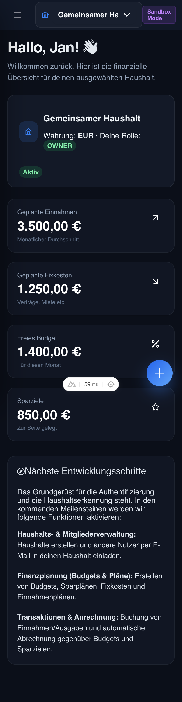
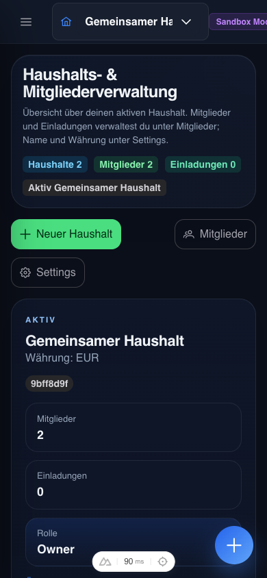
Problem: Über jeder Page prangte ein interner Roadmap-Marker. Erinnerte Beta-Tester sofort daran, dass die App "noch gebaut wird".
Fix: Die eyebrow="Meilenstein X / Y"-Props aus allen 8 Pages entfernt. eyebrow-Prop und <Kicker>-Komponente bleiben für echte Section-Labels (z. B. "Monat", "Einnahmen" / "Fixkosten") erhalten.
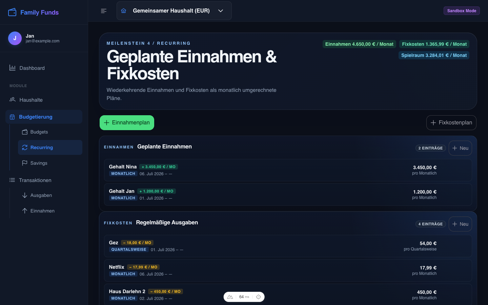
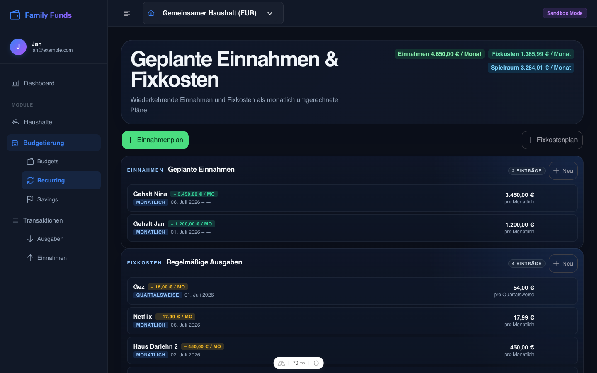
Problem: Auf der Login-Seite stand "Sie können sich als jeder der oben gelisteten Test-User anmelden" — höfliche Sie-Form, während der Rest der App duzt. Falsches Deckchen auf der ersten Page, die der User sieht.
Fix: Ein String-Tausch. "Sie können sich" → "Du kannst dich". Eine Zeile, ein Match.
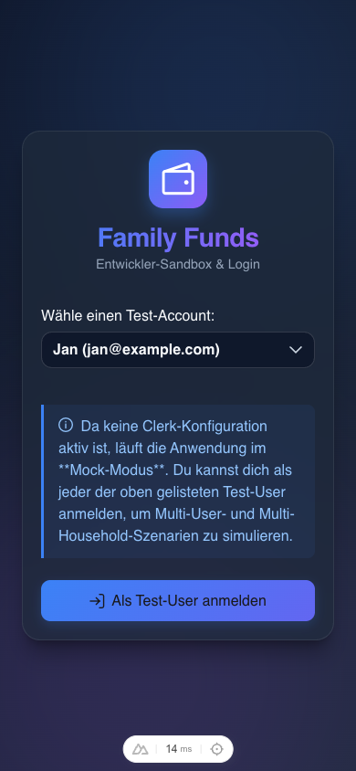
Problem: Auf Mobile schnitt der Selector den Haushaltsnamen hart ab (z. B. "Gemeinsamer H…") — bei langen Namen wie "Wohnung Berlin-Neukölln WG" verschwand der Name komplett.
Fix: Auf der inneren .p-select-label greifen white-space: nowrap, overflow: hidden und text-overflow: ellipsis — saubere Kürzung mit "…". Auf dem .household-switcher-Wrapper liegt ein :title-Binding mit dem vollen Namen — bei Hover/Long-Press zeigt der native Browser-Tooltip den vollständigen String.
Die ursprünglichen Bugs mit Vorher/Nachher — inkl. Root-Cause-Analyse.
Symptom: Beim Klick in der Sidebar rendert die Seite sauber. Beim Browser-Reload (URL-Paste, F5, neuer Tab) erscheint nach ~500ms eine 500-Seite: "Cannot read properties of null (reading 'name')".
Root Cause: Zwei Bugs zusammen:
<article v-else> in Zeile 134 rendert automatisch, sobald der v-if davor false ist. Beim Client-Hydrate durchläuft Vue einen Mismatch-Recovery-Pfad: useHousehold().activeHousehold wurde aus dem useState restored, aber currentHousehold (lokale Ref) war noch null. Der v-else griff und griff auf currentHousehold.name zu.currentHousehold?.invitations.length (Zeilen 101, 151) bzw. currentHousehold?.members.length (Zeilen 100, 147) — optional chaining schließt nur den direkten Property-Access kurz, nicht den ganzen Pfad. Bei ?.foo.length short-circuited nur wenn currentHousehold null war.Fix: <article v-if="currentHousehold"> als expliziter Guard, alle vier Längen-Zugriffe mit ?.foo?.length ?? 0 abgesichert.
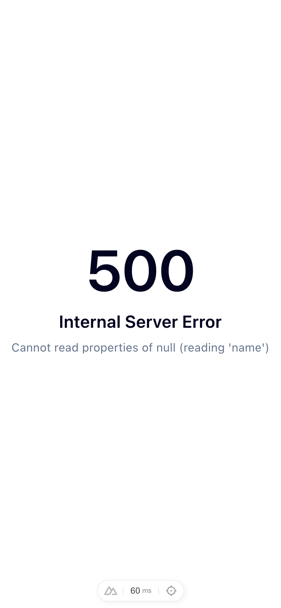
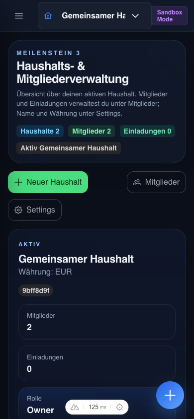
Verifiziert mit Playwright-Reload-Test: vorher wechselte die Page nach 500ms zur 500-Seite. Nachher: durchgängig korrekter Content, 0 Page-Errors.
Vorher: Vier hardcoded KPI-Cards im Template (3.500 € / 1.250 € / 1.400 € / 850 €), komplett unabhängig von den Seed-Daten. Plus: "Nächste Entwicklungsschritte"-Card mit Roadmap-Kommunikation — eine Lüge, weil die genannten Features längst live sind.
Nachher:
/api/households/[id]/dashboard gebunden — der Endpoint existierte schon, musste nur konsumiert werden.useRequestHeaders(['cookie']) wie in useHousehold.ts, sonst sieht die API beim SSR keine Session.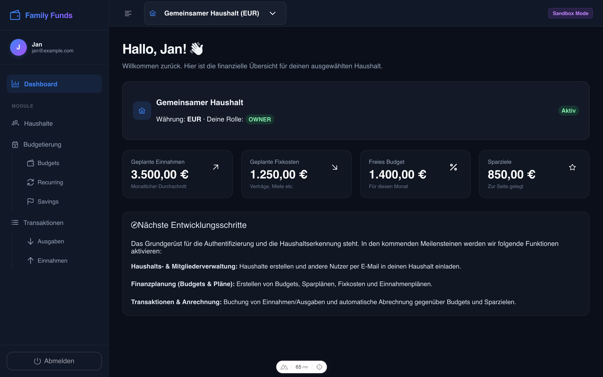
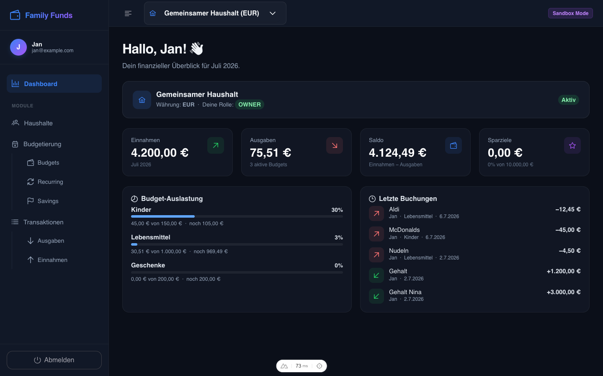
Echte Werte nach Seed: 4.200,00 € Einnahmen, 75,51 € Ausgaben, 4.124,49 € Saldo, 0 € auf 2 Töpfen (Urlaub + Reparaturen, beide leer — ehrlich angezeigt statt erfundener 850 €).
Vorher: Drei Pages mit 5+ Spalten brachen auf Mobile: Beträge abgeschnitten (Expenses/Income), Role-Tags truncated zu "OWN"/"MEM" (Members). Bei 390 px Viewport war die wichtigste Information oft außerhalb des sichtbaren Bereichs.
Nachher:
ListTable hat einen optionalen #mobile-Slot. Auf <768px rendert die Komponente Cards statt der Tabelle; auf Desktop bleibt alles wie vorher.:deep.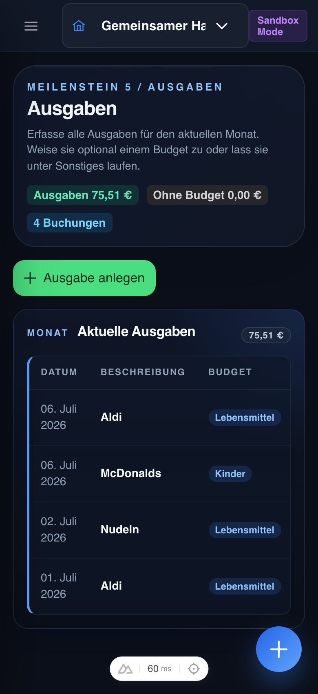
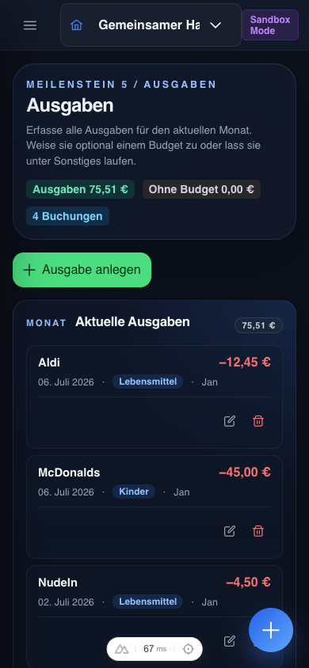
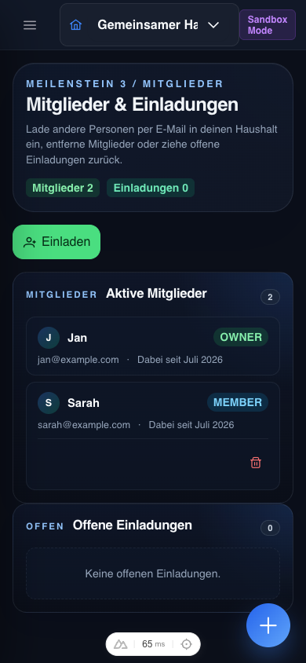
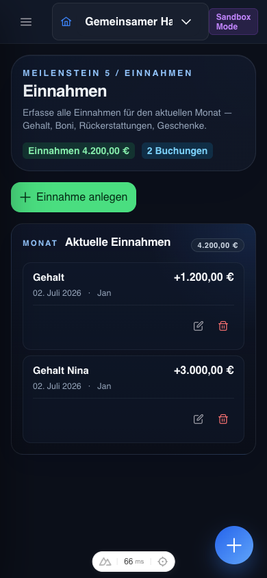
Breakpoint bei 768px (gleicher Wert wie das existierende Mobile-Drawer-Media-Query in app/layouts/default.vue). Verifiziert: bei 800px Tabelle sichtbar + Cards hidden, bei 390px umgekehrt. 0 Console-Errors auf allen Snapshots.
Ursprünglicher Befund: Im ersten Review-Screenshot war der Main-Container der Recurring-Seite so weit nach rechts verschoben, dass zwei Sidebars gleichzeitig sichtbar waren — Items überlappten sich, Inhalt lief rechts aus dem Viewport.
Status: Beim Re-Test nach den anderen Fixes nicht reproduzierbar. Recurring rendert seither sauber: linksbündig im Main-Container, alle Items im Viewport, auch mit collapsed Sidebar. Wahrscheinliche Ursache: transienter HMR-Glitch während der ursprünglichen Aufnahme (ich hatte kurz davor an households/index.vue gearbeitet, was einen Layout-Re-Calc auslösen kann).
Lehre: Wenn ein Layout-Bug nur sporadisch auftritt, lohnt sich ein erneuter Reload-Test bevor man Zeit in den Fix steckt. Manchmal löst das Symptom sich von selbst, wenn benachbarte Komponenten aktualisiert werden.
Kein Crash, aber: drei Sachen, die jeder Beta-Tester sofort markiert. Zusammen in einem Sprint gut wegzubekommen.
Status: Erledigt in der 2. Session. Badge ist jetzt hinter v-if="!isClerkMode" versteckt — in Mock-Mode weiter sichtbar (nützlich als Dev-Marker), in Production (Clerk-Mode) komplett weg. Plus: white-space: nowrap auf dem env-tag, damit der Badge auf Mobile nicht mehr 2-zeilig umbricht.
Status: Erledigt in der 2. Session. Die eyebrow="Meilenstein X / Y"-Props wurden aus allen 8 Pages entfernt (statt nur per Auth-Flag zu verstecken — so ist das Ergebnis im Dev direkt sichtbar). Die eyebrow-Prop und die <Kicker>-Komponente bleiben für echte Section-Labels erhalten (z. B. "Monat" über dem aktuellen Monats-Panel, "Einnahmen" / "Fixkosten" in der Recurring-Page).
Status: Erledigt im Fix-2-Schritt. Die Roadmap-Card wurde im Zuge des Dashboard-Refactors komplett entfernt. Stattdessen zeigt das Dashboard jetzt eine "Budget-Auslastung"-Sektion mit Progress-Bars und eine "Letzte Buchungen"-Sektion mit echten Transaktionen — beides ehrlich, beides live.
Status: Erledigt in der 2. Session. Auf der inneren .p-select-label greifen jetzt white-space: nowrap, overflow: hidden und text-overflow: ellipsis — der Name wird sauber mit "…" gekürzt statt den Container zu sprengen. Auf dem .household-switcher-Wrapper liegt ein :title-Binding mit dem vollen Namen — bei Hover/Long-Press zeigt der Browser den vollständigen String als nativen Tooltip. Bei einem langen Namen wie "Wohnung Berlin-Neukölln WG" bleibt der Selector schmal, der User sieht aber trotzdem alles.
Status: Erledigt im Fix-3-Schritt (selber Mechanismus wie bei den Expenses/Income). Members rendert auf Mobile jetzt als Card-View: Avatar-Initial + Name oben, dann OWNER/MEMBER-Tag voll sichtbar (kein Truncate mehr), darunter E-Mail + "Dabei seit", Trash-Button bei Nicht-Selbst-Members in eigener Footer-Row. Desktop-Tabelle unverändert.
Eine "Sparziel"-Übersicht ohne den aktuellen Stand ist wie ein Tankstellen-Display ohne aktuellen Preis. Die Karten zeigen Zielbetrag 5.000 €, aber kein "Bisher: 1.250 € / 25%" und keinen Progress-Bar. Bei zwei Töpfen ("Reparaturen", "Urlaub") mit 0 € Inhalt ist die Seite komplett leer an Information.
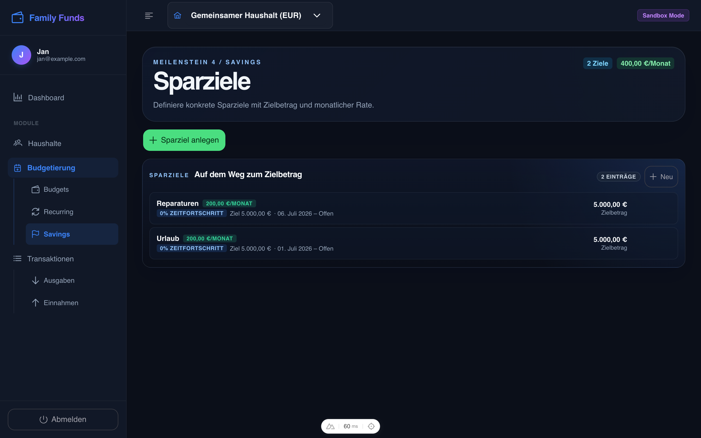
Was fehlt: aktueller Topf-Stand (Summe aller SavingsGoalExecutions) + Progress-Bar zum Zielbetrag. Im CONTEXT.md ist genau das die Semantik — die UI hat es nur nicht umgesetzt.
Status: Erledigt in der 2. Session. "Sie können sich als jeder der oben gelisteten Test-User anmelden" → "Du kannst dich als jeder der oben gelisteten Test-User anmelden". Eine Zeile, ein Tausch, Ton konsistent mit dem Rest der App.
Bevor du dich nur an den Bugs aufhängst — die App hat starke Stellen.
Mock-Modus ist sauber gelöst — Test-User-Auswahl + Clerk-Toggle. Visuell stark (Gradient-Background, Card mit Backdrop-Blur), funktional komplett.
Sidebar-Hierarchie (Haushalte / Budgetierung / Transaktionen → Sub-Items) ist klar, vorhersehbar, skaliert. Genau die richtige Komplexitätsstufe für ein Side-Project.
Dark-Mode ist konsequent durchgezogen, Karten/Panels haben schöne Glass-Effekte, Stat-Cards mit Icon-Badges sehen 2026-würdig aus. PrimeVue-Aura-Preset harmoniert gut mit den Custom-Overrides.
Domain-Modell ist im CONTEXT.md klar dokumentiert, die Trennung Plan vs. Transaction ist sauber, das Sonstiges-Auto-Bucket ist ein netter Default. Genau die richtige fachliche Tiefe.
Prio 1 komplett abgehakt, Prio 2 zur Hälfte erledigt (Roadmap-Card + Members-Mobile-Card-View im selben Aufwasch mitgegangen). Was offen ist, hat keine Auswirkung auf Funktion oder Stabilität — nur auf "Beta-Polish".
v-if-Guard + tiefere Optional-Chaining./api/households/[id]/dashboard wird jetzt konsumiert.ListTable via #mobile-Slot.v-if="!isClerkMode" + white-space: nowrap gegen Mobile-Wrap.eyebrow="Meilenstein X / Y" aus allen 8 Pages entfernt.text-overflow: ellipsis auf der inneren Label + title-Attribut auf dem Wrapper als Tooltip.Stand nach der 2. Session vom 09.07.: Die 4 P2-Schnellgewinne sind durch. Was bleibt, ist eine echte Feature-Entscheidung, kein Polish mehr.
Alle 4 Quick-Wins sind im Repo, smoke-getestet (10 Pages, 0 Console-Errors, alle 200 OK):
v-if="!isClerkMode" → in Production weg, in Mock sichtbar als Dev-Marker. Plus white-space: nowrap gegen Mobile-Wrap.text-overflow: ellipsis auf der inneren Label + title-Attribut auf dem Wrapper als nativer Tooltip.Vorher-/Nachher-Snapshots liegen in .ux-review/shots-after-fixes/, sechs neue Bilder zum direkten Vergleich.
Aktuell zeigt die Savings-Seite nur den Zielbetrag (5.000 €), nicht den aktuellen Stand. Für 0-€-Töpfe ist das eine leere Seite — null Information. Im CONTEXT.md ist die Semantik dokumentiert (aktuelle Summe + Progress-Bar zum Ziel), die UI hat es nur nicht umgesetzt.
Das ist aber kein simpler Fix mehr:
GET /api/households/[id]/savings-goals/progress (oder Aggregation im bestehenden savings.get.ts)SavingsGoalExecutionsFrage an dich: vor Beta-Sharing reinnehmen (Feature) oder erstmal als Feature-Ticket in .harness/ parken? Mein Bauchgefühl: parken — die UI ist ohne den Progress nicht kaputt, nur informationsarm. Ein ½-Tag-Ticket gehört in den normalen Feature-Flow, nicht zwischen die Fixes gemogelt. Aber wenn du sagst "ich will's im Beta sehen", mach ich's in einer 3. Session.
→ Auf GitHub als Issue #12 getrackt (Status: OPEN, Labels: enhancement + needs-triage).
Die 5 offenen Issues sind jetzt auf GitHub getrackt. Mein Vorschlag, in welcher Reihenfolge sie sinnvoll reinpassen — sortiert nach "Sichtbarkeit × Aufwand":
Beta-Phase-1-Bundle (vor dem ersten Sharing): #12 (optional) + #14 + #13 — drei Issues, ~3 Tage Aufwand, decken die "Wow"-Sachen ab. #16 + #15 sind Beta-Phase 2 nach den ersten Tester-Feedbacks.
Issue-Tracker: github.com/nordlys-bi/family-funds/issues · 5 Issues neu (#12–#16) · Status: alle OPEN mit enhancement + needs-triage.